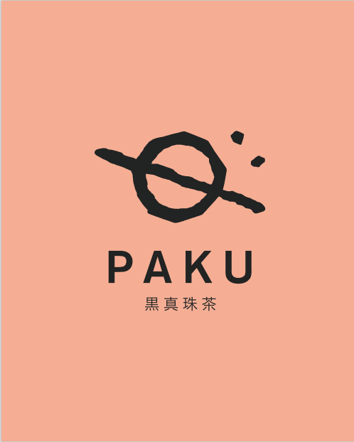

Happaku Dosei es la novena área de la astrología japonesa, representa a Saturno y la tierra, su elemento respectivo. Lo anterior es la base esencial de la identidad gráfica de Paku, una cafetería estilo oriental enfocada en las bebidas con tapioca, típicas de Taiwán. El concepto de Paku surgió a partir de una investigación de la heráldica de mis apellidos; Sadurni, mi apellido materno, tiene su origen en Saturnino, que a su vez proviene de Saturno. Dentro de todos sus posibles significados, me pareció que representar un planeta podría ser lo más interesante porque se trataba de abstraer algo que en sí, ya está en su forma mínima.
